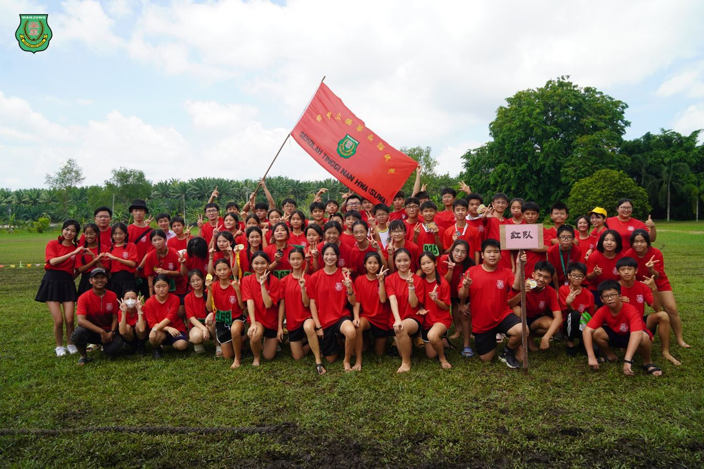
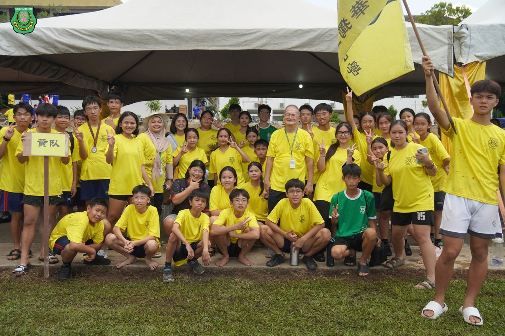
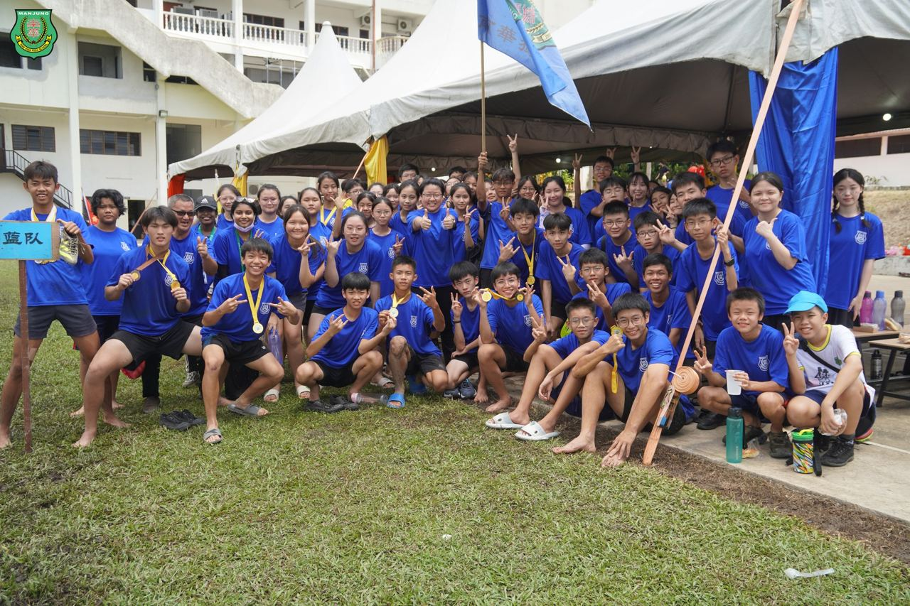
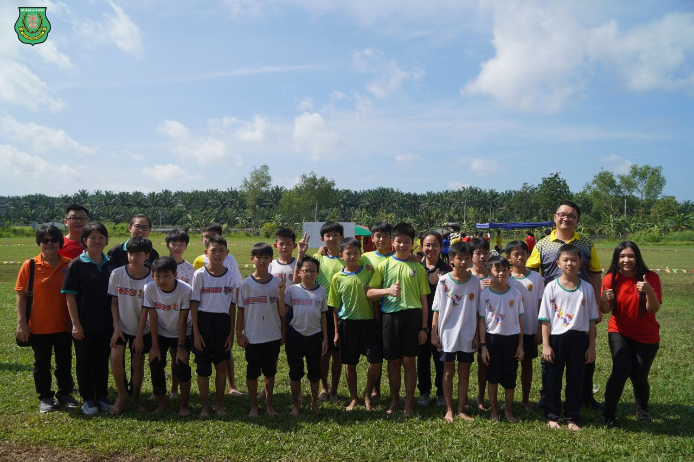
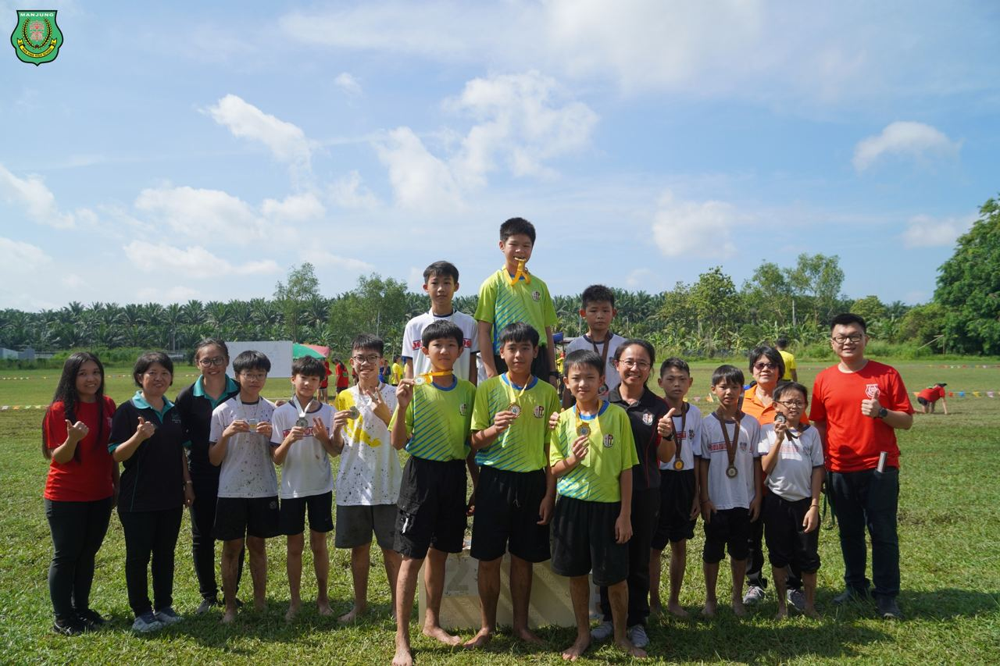
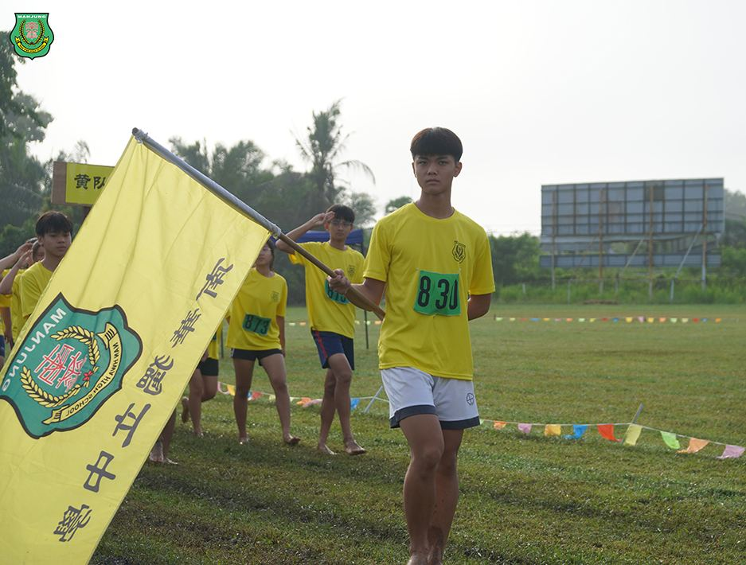
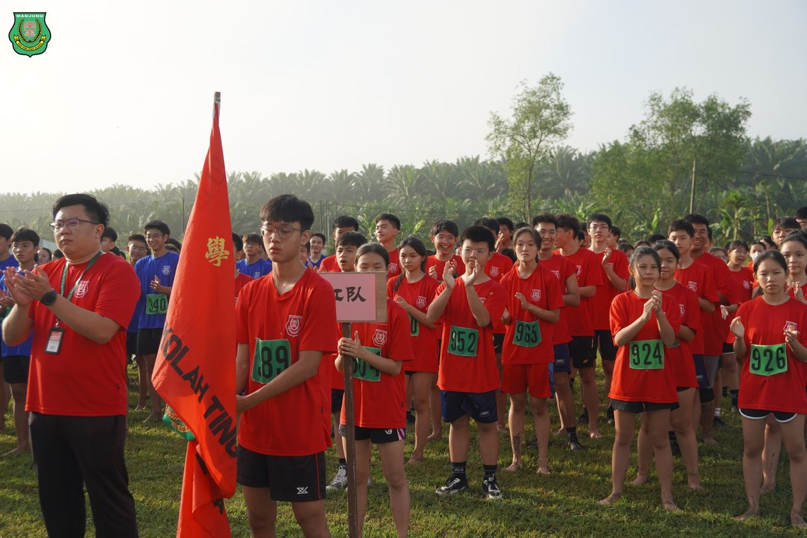
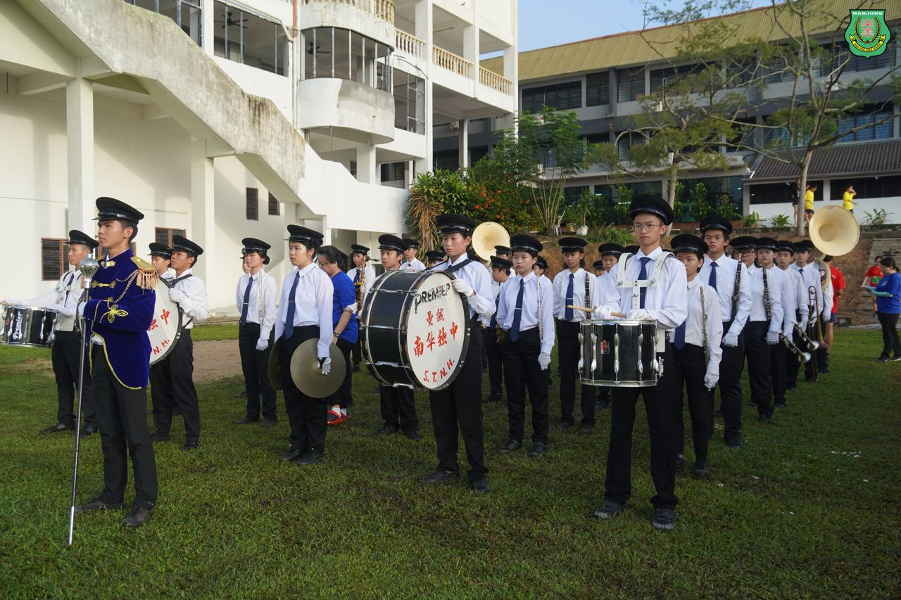

南华独中第22届运动会
南华独中第22届运动会
无畏拼搏精神遍布青葱草场
南华独中于日前成功举办第22届运动会，全校董家教师生热情参与，共襄盛举。现场除了设立常规的田赛、径赛、董家教师生4x100接力赛以及色队拔河比赛，同时邀请曼绒县华小派代表参加校际4*100接力赛，运动健儿高涨的拼搏精神感染全场，掌声与呐喊此起彼落。
本校董事副总务拿督黄思贤在开幕致辞中表示运动会对学生锻炼体魄与精神的重要性，他强调“运动会是人类社会进步所需要的集中体现，面对困难我们要奋力拼搏，面对挑战我们要勇于前行，我们要团结互助，摔倒了要爬起来，我们还要前行。希望运动员都可以发扬‘更高、更快、更强’的奥林匹克精神，遵守比赛规则，尊敬裁判，赛出风格，赛出水平。”
本校校长陈丽冰博士在致辞忠表示“体育不仅是培养竞争观念的方式，更重要的是培养协同精神和平等意识的途径。”陈校长说，“通过体育活动，学生们可以学会尊重规则，尊重他人，并培养自律能力，这才是体育的真正价值所在。”此外，陈校长透露今后学校将继续优化体育课程设置，不断改善运动设施，努力为学生提供更好的体育学习环境。她强调，学校也将一如既往地支持和推动体育教育，为学生的全面发展创造良好的条件。
除了常规比赛项目外，本次运动会还特别设有曼绒县华小校际4*100接力邀请赛。各华小学生在赛场上浑身解数展示了团队合作的精神风貌。同台竞技以后，冠军最终由实兆远国民华小夺得、亚军福清洋育英华小，季军则是甘文阁育智华小。
运动会期间，各类体育项目精彩纷呈，学生们在赛场上尽情挥洒汗水，展现了青春的活力和拼搏的精神。特别值得一提的是，红队凭借出色的表现和团结协作，最终夺得了全场总冠军，赢得了在场师生的热烈掌声和喝彩。
南华独中第22届运动会
全场最佳男运动员：张梓乐
全场最佳女运动员：陈盈绚
男甲最佳运动员：苏雅杰
女甲最佳运动员：陈盈绚
男乙最佳运动员：张梓乐
女乙最佳运动员：林乐语
#第22届运动会 #曼绒县华小校际赛 #董家教师生 #拔河
#南华独中 #曼绒 #实兆远







